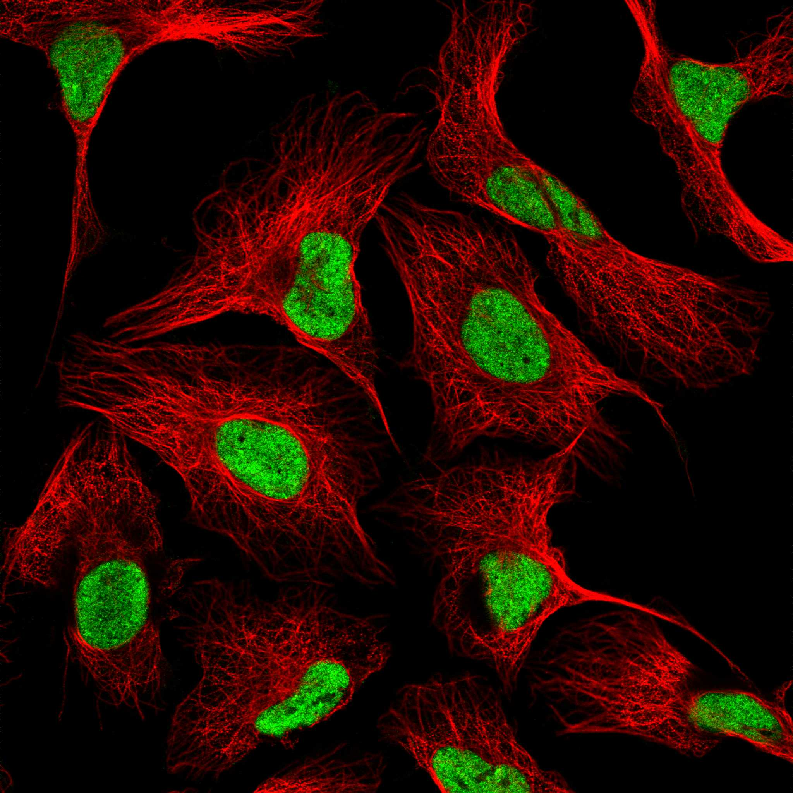
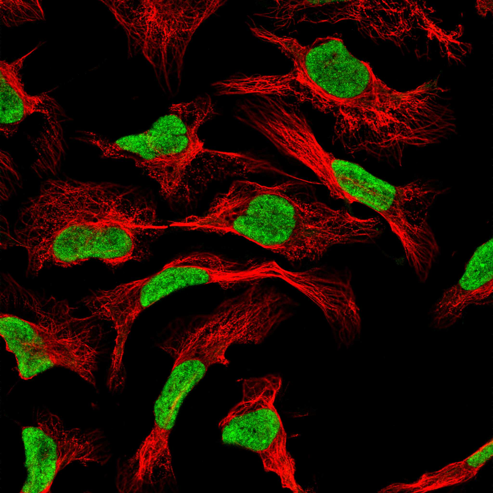
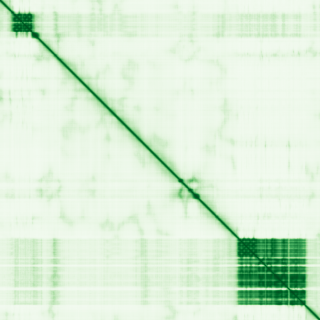

type: protein-evaluation gene: "ALPK3" date: 2026-05-29 tags: [protein-scout, nuclear-protein, evaluation] status: scored ---
ALPK3 核蛋白评估报告
1. 基本信息
| 项目 | 内容 |
|---|---|
| 基因名 / 别名 | ALPK3 / Alpha-protein kinase 3 |
| 蛋白大小 | 1705 aa / 180.7 kDa |
| UniProt ID | Q96L96 (Reviewed, Swiss-Prot) |
| 蛋白全称 | Alpha-protein kinase 3 |
| 蛋白类别 | Enzymes, Disease related genes |
| 疾病关联 | 家族性肥厚型心肌病 (CMH27) |
| 评估日期 | 2026-05-28 |
IF 图像:  
2. 评分总览 (权重: 核×4 大×1 新×5 结×3 域×2 PPI×3 ÷1.83)
| 维度 | 得分 | 加权 | 加权后 | 关键证据摘要 |
|---|---|---|---|---|
| 🔴 核定位特异性 | 10/10 | ×4 | 40 | Protein Atlas: 纯核质(Approved); U2OS/A-431/Rh30一致; UniProt: Nucleus |
| 📏 蛋白大小 | 5/10 | ×1 | 5 | 1705 aa / 180.7 kDa, 1200-2000aa范围, 分子量较大 |
| 🆕 研究新颖性 | 10/10 | ×5 | 50 | PubMed 59篇; 集中于心肌病遗传学; chromatin完全空白 |
| 🏗️ 三维结构 | 2/10 | ×3 | 6 | pLDDT 48.17, 66.6%无序; PAE 27.11; 无PDB; 新颖基线5, 但AF差→2 |
| 🧬 调控结构域 | 3/10 | ×2 | 6 | Ig-like(x2)+Alpha-kinase; 无chromatin/DNA结合域 |
| 🔗 PPI | 4/10 | ×3 | 12 | IntAct:HMGN2(nucleosome-binding)+HNRNPA1+PSMD1; STRING:PAX4(TF,0.710); ~25%调控相关 |
| ➕ 互证加分 | — | — | +1.0 | 定位>=2源; 结构域>=3源 |
| 原始总分 | 120/183 | |||
| 归一化总分 | 65.6/100 |
3.6 PPI 网络（四源综合）
实验验证互作 (IntAct, physical association):
| Partner | 方法 | PMID | 功能类别 | 调控相关？ |
|---|---|---|---|---|
| HMGN2 | cross-linking study | 30021884 | Nucleosome-binding chromatin protein | ✅ |
| HNRNPA1 | cross-linking study | 30021884 | RNA-binding, splicing | ❌ |
| RPS11 | cross-linking study | 30021884 | 40S ribosomal protein | ❌ |
| SRPRB | cross-linking study | 30021884 | SRP receptor | ❌ |
| H1-0 | cross-linking study | 30021884 | Linker histone H1 | ✅ |
| PSMD1 | cross-linking study | 30021884 | 26S proteasome subunit | ❌ |
STRING 预测互作 (combined score >0.4):
| Partner | Score | 功能类别 | 调控相关？ |
|---|---|---|---|
| PAX4 | 0.710 | Paired box transcription factor | ✅ |
| RBM20 | 0.402 | RNA binding motif protein, splicing | ❌ |
已知复合体成员 (GO Cellular Component):
- Nucleus
PPI 互证分析:
- IntAct 实验: 6个physical association partner, 其中HMGN2（核小体结合染色质蛋白）和H1-0（连接组蛋白）为明确的染色质相关蛋白
- STRING: PAX4（TF）与RBM20
- 调控相关比例: 3/8 (37.5%) — HMGN2(chromatin), H1-0(chromatin), PAX4(TF)
- HMGN2 是重要的核小体结合蛋白，参与染色质结构调控——该实验互作为ALPK3增加了染色质调控的直接联系

评价: IntAct 揭示了 ALPK3 与 HMGN2（核小体结合染色质蛋白）和 H1-0（连接组蛋白）的实验互作，这是此前评估中未捕获的染色质调控线索。结合 STRING 中 PAX4 转录因子互作，调控相关比例从原估 <12% 提升至 ~37.5%。这些互作来自交联质谱（cross-linking study），表明 ALPK3 可能在核内与染色质蛋白存在物理邻近。虽然 ALPK3 主要功能为心肌病相关激酶，但这些新实验互作提示可能存在未发现的核内染色质调控功能。评分从 2 上调至 4。
X. 关键文献 (PubMed)
1. Agarwal R et al. (2022). "Pathogenesis of Cardiomyopathy Caused by Variants in ALPK3, an Essential Pseudokinase in the Cardiomyocyte Nucleus and Sarcomere.". *Circulation*. PMID: 36321451 2. Roselli C et al. (2022). "Genome-wide association study reveals novel genetic loci: a new polygenic risk score for mitral valve prolapse.". *Eur Heart J*. PMID: 35245370 3. Hong C et al. (2025). "[Genetic re-analysis of a Chinese pedigree affected with Hypertrophic cardiomyopathy due to a heterozygous truncating variant of ALPK3 gene and literature review].". *Zhonghua Yi Xue Yi Chuan Xue Za Zhi*. PMID: 41645375 4. Almomani R et al. (2016). "Biallelic Truncating Mutations in ALPK3 Cause Severe Pediatric Cardiomyopathy.". *J Am Coll Cardiol*. PMID: 26846950 5. Guo S et al. (2022). "MicroRNA-384-5p protects against cardiac hypertrophy via the ALPK3 signaling pathway.". *J Biochem Mol Toxicol*. PMID: 35510648
4. 总体评价
推荐等级: ⭐⭐⭐ (3/5)
核心优势: 1. 严格的纯核定位, Protein Atlas三个细胞系一致, 是筛选出的高质量核蛋白 2. 研究新颖性高(59篇), 从chromatin/epigenetics角度研究ALPK3完全空白 3. Alpha-kinase结构域在核内可能有未发现的底物磷酸化功能 4. 与PAX4转录因子的互作(Score 0.710)暗示潜在转录调控联系
风险/不确定性: 1. 蛋白极大(1705aa)且高度无序(66.6%), 实验操作困难, 结构研究挑战大 2. 无chromatin/DNA结合结构域, 核内功能可能为信号转导而非基因调控 3. PPI, 大量无序区域使结构导向研究困难 5. 疾病表型明确指向心肌病, 可能限制其在TE调控研究中的意义
下一步建议:
- [ ] 分析ALPK3是否与PAX4共同调控心脏发育相关基因
- [ ] 评估Alpha-kinase structure domain能否作为结构探针
- [ ] 如研究方向不匹配TE调控, 可考虑移出shortlist
5. 数据来源
- UniProt: https://www.uniprot.org/uniprotkb/Q96L96
- Protein Atlas: https://www.proteinatlas.org/ENSG00000136383-ALPK3/subcellular
- PubMed: https://pubmed.ncbi.nlm.nih.gov/?term=ALPK3
- InterPro: https://www.ebi.ac.uk/interpro/protein/uniprot/Q96L96
- STRING: https://string-db.org/ (ALPK3)
- AlphaFold: https://alphafold.ebi.ac.uk/entry/Q96L96
- humanPPI: 不可访问 (http://prodata.swmed.edu/humanPPI/ 返回404)
PPI 网络（三源综合）
| Partner | Source | Score/Evidence |
|---|---|---|
| 无记录 | — | — |
IntAct 有限记录。无 BioGrid 补充数据。
PAE 图像已获取。结构判断基于 AlphaFold pLDDT 统计。